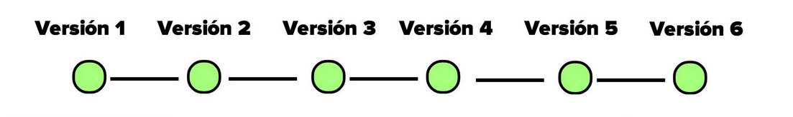
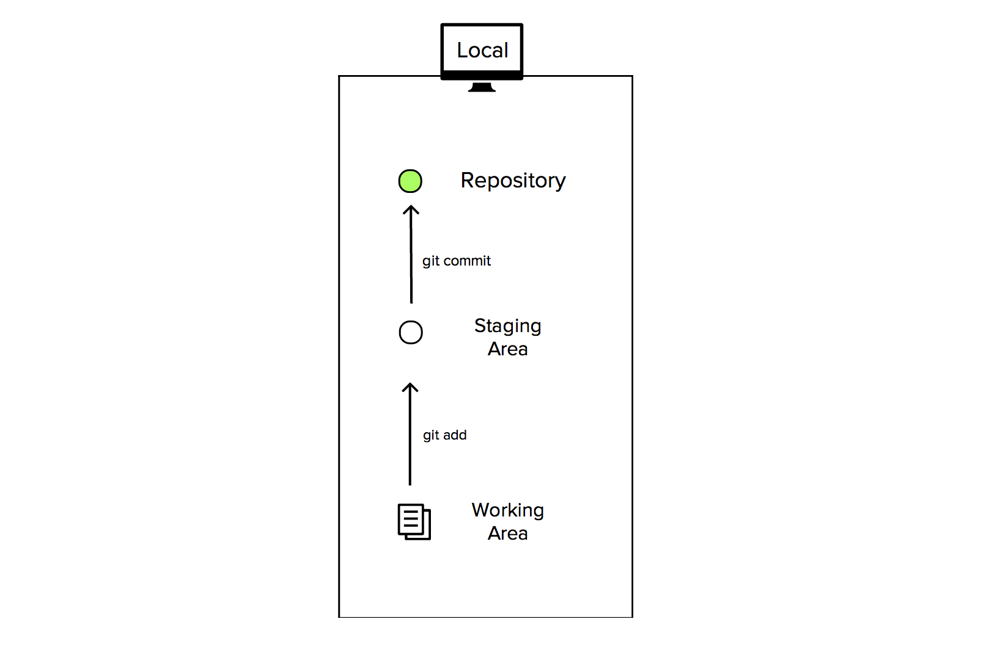
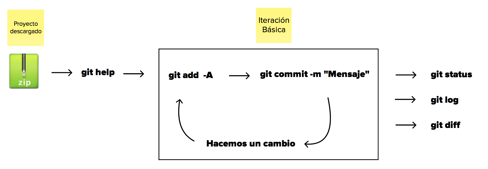

Cátedra: Seminario de Software
Catedrático: Oscar Omar Pineda
Presentado por: Atilio Josue Alvarez, Rosy Sujey Cruz
Objetivo principal
Generes un proyecto, vayas salvando sus cambios y mejores tus conocimientos en GIT.
Empecemos con el contexto
1.1 Instalación
1.2 Sistemas de Control de Versiones.
1.3 ¿Qué es Git?
1.4 Arquitectura de Árbol.
1.5 Configurando GIT.
1.1 Instalación
a) Entren a http://git-scm.com
b) Escoja dependiendo de Windows, Mac, Linux
1.2 Sistemas de Control de Versiones

1.2 Sistemas de Control de Versiones(Surgiemientos)
Estos SCV surgen debido a que durante muchos años
(70's - 2000), la mayoria de los profesionales de software se tuvieron que enfrentar a desarrollar proyectos de forma muy pesada.
1.2 Sistemas de Control de Versiones(Surgiemientos)
Nos encontrábamos con 3 problemas:
Proyectos difíciles de gestionar y liderar.
Riesgos a sobrescribir con mi código el avance
formal del equipo.
La centralización y poca probabilidad de trabajar
remotamente.
1.2 Sistemas de Control de Versiones
1) Registran y guardan cada modificación del proyecto en un registro. Todo lo que modificas, lo vigilan.
1.2 Sistemas de Control de Versiones

2) Te dan acceso a este registro. Con esto, puedes gestionarlo, compartirlo, colaborarlo, administrarlo, editarlo, etc.
1.2 Sistemas de Control de Versiones

3) Podrás moverte hacia atrás o hacia adelante en diferentes momentos del proyecto.
1.3 ¿Qué es GIT?

1.3 ¿Qué es GIT?

1.3 ¿Qué es GIT?

1.3 ¿Qué es GIT?

1.4 Arquitectura de árbol

1.4 Arquitectura de árbol

1.4 Arquitectura de árbol

1.4 Arquitectura de árbol

1.4 Arquitectura de árbol
1.5 Configuración
Abrir terminal, consola, bash
$ git --version
$ git config --global user.name "TU NOMBRE"
$ git config --global user.email "TU CORREO DE GITHUB"
$ git config --global color.ui true
$ git config --global --list
Ejercicio (70% de git)

Ejercicio (70% de git)

Ejercicio (70% de git)

Material de Apoyo
GIT CHEAT SHEET
Official Page of Git
Pro Git, el libro oficial de Git